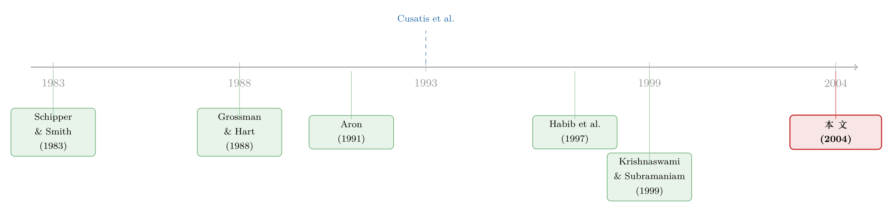

拆掉一家公司，是为了让老板「坐不住」
本文读的是 Chemmanur & Yan (2004, Journal of Financial Economics)：一家有两个事业部的公司，把其中一个分拆 (spin-off) 出去，为什么股价会涨、经营会变好？作者给出的答案不是「专注」、也不是「信息」，而是控制权——分拆把在位管理层从「高枕无忧」的位置上拽了下来，逼他要么更卖力地干活，要么干脆把一块业务的控制权让出去。无论哪一种，留给股东的蛋糕都变大了。
1 一个被讲滥了、却没讲清的故事
公司分拆这件事，华尔街给的标准解释几乎是条件反射式的：专注 (corporate focus)。把不相关的业务剥离出去，让管理层「聚焦主业」，价值自然就上来了。听起来很顺，可一旦你追问一句「那价值到底是从哪儿冒出来的」，这套说辞就开始打滑。
实证文献其实早就把现象描述得很清楚了。母公司股东在分拆公告日就能赚到正的超额收益，而债权人几乎毫发无伤（Hite and Owers, 1983；Miles and Rosenfeld, 1983；Schipper and Smith, 1983）。但真正让人坐不住的，是 Cusatis、Miles and Woolridge (1993) 那篇文章里的几个事实：
- 分拆出来的子公司和它的母公司，在公告日之后长达三年里，都持续跑出显著为正的超额收益；
- 这两类公司，随后被收购的概率，都显著高于同类对照组；
- 最关键的一条反转——那些在三年内没有发生收购的「母公司 + 子公司」组合，长期超额收益并不显著为正。
把这三条放在一起读，专注假说就有点尴尬了。如果分拆的好处来自「业务更聚焦、经营更高效」，那好处应该是分拆本身带来的，跟后来有没有人来收购有什么关系？为什么偏偏是「后来被收购了」的那一批，才兑现了长期的超额收益？
这正是本文的切入点。Chemmanur 和 Yan 说：你们都盯着「分拆改善了经营」，却漏掉了一个更朴素的渠道——分拆改变了控制权市场的格局。它让在位者更容易丢掉控制权，而正是这份「丢掉控制权的威胁」，把后面的一切都串了起来。
（顺带一提，关于「分拆是否真的让公司投得更聪明」，实证上其实有过相当激烈的争论，可参见《拆分真能让公司投得更聪明吗？》——那篇文章用测量误差和内生性，几乎把流行结论整个推翻了。本文则是从理论上给出另一个机制。）
2 核心直觉：藏在「打包」里的护城河
先把故事的骨架讲清楚，再上数学。
设想一家公司，有两个事业部，由现任管理层（下称在位者 (incumbent)，记作 \(I\)）经营。在位者从公司里拿两样东西：一是证券收益 (security benefits)，也就是他自己持有的那部分股权的市值——这部分所有股东都分；二是控制权私利 (private benefits of control)，比如说了算的快感、在职消费、资源调配权——这部分只有掌权的人独享，而且不进入任何证券的价格。这个「证券收益 + 控制权私利」的二分法，在公司控制权文献里早已是标准设定（Grossman and Hart, 1988；Harris and Raviv, 1988）。
现在引入一个关键的能力错配：在位者擅长管事业部 1，但不擅长管事业部 2。市场上还潜伏着一个对手 (rival)，他管事业部 2 比在位者强；公司内部还可能有一位事业部经理 (division manager)，她管事业部 2 也比在位者强（但不如对手）。
问题来了：既然在位者管事业部 2 是个短板，为什么平时没人能把他赶下台？
因为「打包」本身就是一道护城河。 当两个事业部捆在一家公司里时，在位者在事业部 1 上的超强能力，足以抵消他在事业部 2 上的短板。被动的散户股东 (passive investors) 在控制权之争里只会把票投给「整体上更能创造价值的人」——而合在一起算，在位者仍然是赢家。于是在联合公司里，在位者根本不会受到挑战，他可以安安稳稳地用「正常努力 (normal effort)」混日子，既不用拼命，也不用担心丢掉任何一块业务的控制权私利。
这就是本文最妙的一层洞察：多元化（把业务捆在一起）不只是「分散风险」，它还是一件防御性的控制权武器——用一块强业务给一块弱业务打掩护，把潜在的挑战者挡在门外。（关于多元化背后被忽略的竞争与战略动机，另见《捆在一起发债：多元化折价里，被忽略的那条「竞争」暗线》。）
那分拆做了什么？ 它把事业部 2 单独拎出来，护城河塌了。现在散户股东只看事业部 2 这一块——而在这一块上，对手（或事业部经理）明显比在位者强。于是事业部 2 立刻变成一块易被攻陷的肥肉：在位者一旦只出正常努力，就会在控制权之争里输给对手。
被架到这个位置上，在位者只剩两条路：
- 更卖力地干活（付出「勤勉努力 (diligent effort)」，承担私人成本 \(c\)），把事业部 2 的价值做上去，争取保住控制权；或者
- 干脆放手，把事业部 2 的控制权直接让给更能干的事业部经理。
注意——这两条路，都会把公司的总价值做大。第一条靠努力提升了经营效率；第二条把业务交给了更合适的人。这就是为什么分拆既有正的公告效应，又有长期经营改善：威胁本身就是纪律。
3 模型：把直觉一步步钉死
下面把上面的故事翻译成模型。论文的设定相当干净，我们按它的记号来。
3.1 时间线与参与人
模型有四个时点 \(t = 0, 1, 2, 3\)，所有人风险中性：
- \(t=0\)：董事会 (board) 决定分不分拆。在位者私下得知这个决定，据此选择努力水平，并决定是否立刻把事业部 2 让给事业部经理。
- \(t=1\)：决定公开，分拆方案随之公布。
- \(t=2\)：对手以概率 \(f\) 出现（以 \(1-f\) 不出现）。一旦出现，他会策略性地把财富投到某个公司的股权里，谋求控制权。
- \(t=3\)：若对手出现，举行代理权之争 (proxy contest)，在位者、对手、散户股东一起投票，结果随即公开。
3.2 公司估值：一把「能力排序」的尺子
在位者可以在事业部 \(i\) 上选择正常努力 \(n\) 或勤勉努力 \(d\)。对应的事业部股权价值为：
$$ V_I^i = \begin{cases} n_i v_i, & e_i = n \\[2pt] d_i v_i, & e_i = d \end{cases} \qquad d_i > n_i $$
其中 \(v_i\) 是事业部 \(i\) 的「规模/基准」。在不分拆时，联合公司的价值多了一块协同效应 (synergy) \(S\)：
$$ V_I^q = V_I^1 + V_I^2 + S $$
如果事业部 \(i\) 被对手拿下并经营，其价值变为 \(h\,v_i\)；如果在位者把它让给事业部经理，价值变为 \(l\,v_i\)。整篇文章的发动机，就是下面这条能力排序：
$$ n_1 > h > l > n_2 $$
读法是：在事业部 1 上，在位者（哪怕只是正常努力）比对手、比事业部经理都强（\(n_1\) 最大）；在事业部 2 上，他比谁都弱（\(n_2\) 最小）；而对手又比事业部经理强（\(h > l\)）。
紧接着是那条「护城河」条件——在位者在事业部 1 的优势，足以抵消他在事业部 2 的劣势：
$$ n_1 v_1 + n_2 v_2 \ge h\,(v_1 + v_2) $$
这条不等式保证了：在联合公司里，散户股东会投在位者，他不会面临任何挑战。最后，假设协同效应虽为正但很小：
$$ S < \big[\max(l, d_2) - n_2\big]\, v_2 $$
这一条至关重要——它意味着「换个更能干的人来管事业部 2」所带来的价值增量，超过了把两块业务捆在一起的协同价值。换句话说，捆绑的好处（\(S\)）抵不过错配的坏处。
3.3 努力的代价，与「为什么平时不卖力」
努力是有成本的：
$$ C(e_i = n) = 0, \qquad C(e_i = d) = c > 0 $$
而且作者特意加了一条假设——单靠证券收益，不足以让在位者勤勉工作：
$$ \alpha\,(d_i - n_i)\, v_i < c $$
这里 \(\alpha\) 是在位者持有的股权比例。这条不等式说：勤勉努力带来的价值增量，按持股比例 \(\alpha\) 分到在位者手里的那一份，抵不过努力的私人成本 \(c\)。所以在没有外部威胁时，理性的在位者绝不会主动拼命——他会躺平。这就把「分拆前的懈怠」从模型里内生了出来，而不是外生假设。
3.4 在位者到底在最大化什么
把以上拼起来，在位者的目标函数就是最大化他在 \(t=3\) 的期望总收益——控制权私利 + 证券收益 − 努力成本。这是全文的核心方程，我们用标注块把它拆开看：
理解这个目标函数，是理解全文的钥匙。丢掉控制权的代价，是失去 \(P_I\)；但拱手让贤、或者让公司被更能干的人接管，又会抬高 \(V_I\)，让在位者作为股东多赚一笔。在位者的所有抉择，都是在 \(P_I\) 和 \(\alpha V_I\) 这两股力量之间做权衡。
3.5 倒推求解：威胁如何变成纪律
作者用逆向归纳求解（先解对手、再解在位者、最后解董事会）。我们沿着「在位者财富较小（\(W_I = W_L\)）、且有合适的事业部经理」这个最有意思的情形走一遍。
先看对手（\(t=2\)）。 对手财务受限——他买不起足够多的股权直接拿下任何一家公司：
$$ W_R < \tfrac{1}{2}\min(n_1 v_1,\, n_2 v_2) $$
所以他必须依赖散户股东的票。而散户只投给更能干的人，再结合排序 \(n_1 > h > l > n_2\)：
- 在事业部 1：在位者哪怕正常努力也比对手强（\(n_1 > h\)），对手永远赢不了；
- 在事业部 2：只要它由在位者（正常努力）或事业部经理经营，对手就能赢（\(h > n_2\) 且 \(h > l\)）。
结论：事业部 2 才是软肋，对手会把钱砸向事业部 2。
再看在位者。 他永远不肯放掉事业部 1（那块的控制权私利 \(P_I^1\) 太香了）。真正的抉择在事业部 2 上。把三种结局的联合股权价值摆出来对比：
- 不分拆：在位者正常努力、稳坐钓鱼台，价值为 $$V^{\text{no-spin}} = n_1 v_1 + n_2 v_2 + S$$
- 分拆 + 让贤（把事业部 2 交给事业部经理）： $$n_1 v_1 + l\,v_2$$
- 分拆 + 勤勉（自己拼命守住事业部 2）： $$n_1 v_1 + d_2 v_2 \quad(\text{在位者另付成本 } c)$$
- 分拆 + 躺平（让对手拿下事业部 2）： $$n_1 v_1 + h\,v_2$$
关键一步在于：由于 \(S < [\max(l, d_2) - n_2]\,v_2\)，上面任何一种分拆结局的价值，都高于不分拆。以「让贤」为例，它与不分拆之差为
$$ (l - n_2)\,v_2 - S > 0 $$
因为 \(S\) 比 \((l-n_2)v_2\) 还小。其余两种结局同理（\(d_2, h\) 都大于 \(n_2\)）。
于是反转出现： 分拆把事业部 2 从「护城河保护下的弱项」变成了「暴露在控制权市场里的猎物」，而在位者对这份威胁的任何一种理性回应——更卖力、或让贤、或被收购——都会做大股东的蛋糕。这就同时解释了正的公告效应、长期经营改善，以及「被收购的那一批才有长期超额收益」（因为收购正是在位者丢掉控制权、价值兑现的那一刻）。
注意整个机制里没有信息不对称的核心戏份，也不需要「分拆让信号更干净」。它纯粹是控制权市场的力学。这正是它区别于此前所有分拆理论的地方。
4 文献脉络：从「信息」到「控制权」
把这条研究线索捋一遍，能更清楚地看到本文站在哪儿。
最早的一波是描述性的：分拆有正的公告效应。Schipper and Smith (1983)、Hite and Owers (1983)、Miles and Rosenfeld (1983) 各自从不同样本确认了母公司股东在公告日获益、而债权人不受影响。Allen et al. (1985) 进一步追问这些收益是不是来自「之前收购犯的错被纠正」。
第二波给现象找理论，主线是信息。Aron (1991) 提出「资本市场作为监督者」——分拆后，单独上市的股价提供了关于管理层生产率的更干净的信号，从而能写出更好的激励合约。Habib, Johnsen and Naik (1997) 说分拆改善了投资者能从价格里推断的信息质量。Nanda and Narayanan (1999) 则强调，当市场看不清各事业部的现金流时公司会被低估，分拆/剥离能帮它以公允价格融资。Krishnaswami and Subramaniam (1999) 用实证支持「正的市场反应源于信息不对称的下降」。

第三波把视线拉长，开始看长期。Cusatis, Miles and Woolridge (1993) 发现的「长期超额收益 + 更多收购」是本文最直接的实证靶子；Daley et al. (1997) 和 Desai and Jain (1999) 则发现，无关分拆 (unrelated spin-offs) 的公告反应与长期回报、经营改善，都显著大于相关分拆 (related spin-offs)。这些「长期」与「收购」的事实，恰恰是信息类理论难以解释的。
本文的位置就在这里：Chemmanur and Yan (2004) 用一个公司控制权 (corporate control) 的模型，把信息派解释不了的长期表现和收购活动，一并装进了同一个框架。它与同作者更早的工作（Chemmanur and John, 1996，研究在位者总想保住控制权时的最优资本结构）以及 John (1993) 关于分拆与债务配置的模型一脉相承，但把「威胁→纪律」这条控制权渠道讲到了极致。
5 评论与延伸（Q&A + 研究方向）
(a) 几个可能的疑问
Q：这不就是 Jensen 那套「让市场来管教经理人」吗，有什么新意？
接力棒确实是从公司控制权市场那条线传下来的（参见《现金为什么一定要「还」出去？——重读 Jensen 的自由现金流》）。但本文的新意在于：它指出分拆这个动作本身会系统性地提高在位者丢掉控制权的概率，从而把外部治理压力内生地施加到管理层身上。换句话说，分拆不是被动接受市场管教，而是董事会主动把管理层推到管教的火力范围里。
Q：凭什么说「打包」能当护城河？现实里多元化公司不是更容易被攻击吗？
模型里的护城河来自两条具体假设：一是在位者在事业部 1 上的超强能力（\(n_1\) 很大），二是散户只按「整体价值」投票（\(n_1 v_1 + n_2 v_2 \ge h(v_1+v_2)\)）。论文还提到第二种护城河效应——联合公司的规模本身能被在位者用来在控制权之争里做战略防御（Section 3.3 用直觉讨论，没放进正式模型）。所以本文的「护城河」是有条件的，针对的是「一强一弱」的错配型集团，而非泛指所有多元化。
Q：长期超额收益是「真有 alpha」还是模型的人为产物？
在模型里，长期超额收益来自价值兑现的时点错配：分拆公告时市场对在位者财富/能力存在不确定（以概率 \(g\) 认为是高财富 \(W_H\)），随后控制权之争的结果逐步揭晓，被收购的公司价值才真正实现。这与 Cusatis et al. (1993) 那条「没被收购的组合没有长期超额收益」高度吻合——价值要靠控制权易手来释放。是不是统计意义上的真 alpha，则取决于实证如何处理这类「内生事件后的长期回报」，这本身就是个老大难问题。
Q：为什么债权人毫发无伤，这个模型管得着吗？
基准模型是全股权的，债权人不受影响是自然的。作者在 Section 5 放松了这条，允许联合公司有债、并让在位者策略性地在两家新公司间分配债务。这就把「分拆中的债务配置」也内生了进来，能与 Parrino (1997) 记录的 Marriott 案那种「财富从债权人转移」的现象对话——不过这是模型的延伸，不是核心。
Q：那「专注假说」就被证伪了吗？
没有。本文不否认专注/信息渠道存在，只是论证了它们解释不了长期表现和收购活动这一块。更准确的说法是：控制权渠道是对既有解释的补充，而且在解释 Cusatis 那批长期事实上更有力。两者在实证上其实可以并存，区分它们才是有意思的活儿。
Q：模型预测「无关分拆」效果更强吗？能对上 Desai-Jain 吗？
能对上一部分。无关分拆里，在位者在被分拆业务上的能力劣势往往更明显（\(n_2\) 更低、错配更严重），护城河塌得更彻底，威胁更大，纪律效应更强——于是公告反应和长期改善都更大。这与 Daley et al. (1997)、Desai and Jain (1999) 的发现方向一致，算是模型一个不错的「事后对账」。
(b) 几个可能的研究问题与提案
1. 分拆的「控制权渠道」能否在债券市场里被读出来？
【经济故事】本文 Section 5 预测在位者会策略性地在母子公司间分配债务，而控制权威胁的强弱应当反映在两家新公司各自的信用利差里：更易被收购的那一家，其债务的治理含义（被接管后的偿付）应不同于受保护的那一家。 【可行性】中。需要把分拆事件与子/母公司逐只债券的二级市场利差对齐（TRACE + Mergent FISD），识别上可借「子公司在行业内的可竞争性」作为「易被收购程度」的代理。难点在于分拆后子公司有独立债的样本不算多。
2. 用并购威胁的外生变动，给「威胁即纪律」做一次准实验。
【经济故事】模型的核心是「丢掉控制权的概率上升 → 努力上升或让贤」。如果能找到一个外生改变收购威胁的冲击（如各州反收购法的变动），就能检验：在收购威胁本就更高的环境里，分拆带来的经营改善是否更大。 【可行性】中高。反收购法的交错出台是公司治理实证里成熟的识别来源；可用交错双重差分，但要小心《当「更稳健」的设计悄悄把符号弄反了》里警告的那类陷阱。结果变量用分拆后的 ROA / 资产周转率。
3. 外资持有人会放大还是削弱这条控制权渠道？
【经济故事】本文的散户股东是「投给更能干的人」的纪律提供者。如果换成持股集中、且更愿意支持现任管理层（或相反）的外资机构，分拆的威胁效应会被改写。外资到底是「管教者」还是「绥靖者」，直接决定纪律强弱。 【可行性】中。可用跨国分拆样本叠加外资持股数据（如 FactSet/13F 类持仓），识别上借各国「可投资度」放开作为外资进入的外生变动——这正是《外资真是「蝗虫」吗？》那条线索的延伸。
4. 控制权私利的大小，能否反推「该不该分拆」的临界点？
【经济故事】模型里在位者「努力 vs 让贤 vs 躺平」的选择，取决于他的控制权私利 \(P_I\) 相对于能力差与努力成本的大小。如果能从大宗股权交易的溢价里结构性地估出 \(P_I\)，就能预测哪些公司分拆后更可能走「让贤/被收购」而非「自己拼命」的路径。 【可行性】中低。控制权私利的结构估计本身已有方法（参见《控制权的私利，到底值多少钱？》），但要把它和分拆后路径联系起来，需要把两套结构模型拼接，识别负担不轻。
我的判断
贡献。 这篇论文最漂亮的地方，是用一个极简的「一强一弱 + 散户按整体投票」的设定，把分拆的公告效应、长期经营改善、长期超额收益、以及随后的收购浪潮这四件原本零散的实证事实，统一进了同一条控制权逻辑里——而这恰恰是当时主流的信息类理论做不到的。它把「分拆前为什么懈怠」「分拆后为什么卖力」都做成了内生结果，逻辑闭环干净利落。
对识别的担忧（如果要拿去做实证）。 这毕竟是理论文章，真正的考验在它的可检验含义上。最大的隐忧是内生性：分拆决策本身就是董事会和管理层博弈的结果，「易被收购程度」与「分拆与否」「事后表现」都可能同时被一些不可观测的公司质量驱动。本文那套关于在位者财富的信息不对称（以 \(g\) 概率高、\(1-g\) 低），在实证里几乎无法直接度量，容易变成「事后讲得通、事前测不准」。
后续想看到什么。 我最想看的是一个干净的准实验：用外生的收购威胁变动，验证「威胁强 → 分拆后改善大」这条单调关系；以及把这条控制权渠道和信息渠道在同一份数据里掰开——比如比较「分拆后被收购」与「分拆后信息环境改善」两条路径各自贡献了多少长期超额收益。能把这两股力量分账的论文，才算真正接住了 Chemmanur 和 Yan 抛出的这一棒。
参考文献
- Allen, J. W., Lummer, S. L., McConnell, J., Reed, D. K. (1985). Can takeover losses explain spin-off gains? Journal of Financial and Quantitative Analysis 30, 465–485.
- Aron, D. (1991). Using the capital market as a monitor: corporate spin-offs in an agency framework. Rand Journal of Economics 22, 505–518.
- Chemmanur, T., John, K. (1996). Optimal incorporation, structure of debt contracts, and limited-recourse project financing. Journal of Financial Intermediation 5, 372–408.
- Comment, R., Jarrell, G. (1995). Corporate focus and stock returns. Journal of Financial Economics 37, 67–87.
- Cusatis, P. J., Miles, J. A., Woolridge, R. J. (1993). Restructuring through spin-offs. Journal of Financial Economics 33, 293–311.
- Daley, L., Mehrotra, V., Sivakumar, R. (1997). Corporate focus and value creation: evidence from spin-offs. Journal of Financial Economics 45, 257–281.
- Desai, H., Jain, P. (1999). Firm performance and focus: long-run stock market performance following spin-offs. Journal of Financial Economics 54, 75–101.
- Grossman, S. J., Hart, O. D. (1988). One share-one vote and the market for corporate control. Journal of Financial Economics 20, 175–202.
- Habib, M. A., Johnsen, B. D., Naik, N. Y. (1997). Spin-offs and information. Journal of Financial Intermediation 6, 153–177.
- Harris, M., Raviv, A. (1988). Corporate control and capital structure. Journal of Financial Economics 20, 55–86.
- Hite, G., Owers, J. E. (1983). Security price reactions around corporate spin-off announcements. Journal of Financial Economics 12, 409–436.
- John, T. A. (1993). Optimality of spin-offs and the allocation of debt. Journal of Financial and Quantitative Analysis 28, 139–160.
- Krishnaswami, S., Subramaniam, V. (1999). Information asymmetry, valuation, and the corporate spin-off decision. Journal of Financial Economics 53, 73–112.
- Miles, J. A., Rosenfeld, J. D. (1983). The effect of voluntary spin-off announcements on shareholder wealth. Journal of Finance 38, 1597–1606.
- Nanda, V., Narayanan, M. P. (1999). Disentangling value: financing needs, firm scope, and divestures. Journal of Financial Intermediation 8, 174–204.
- Parrino, R. (1997). Spin-offs and wealth transfers: the Marriott case. Journal of Financial Economics 43, 241–274.
- Schipper, K., Smith, A. (1983). Effects of recontracting on shareholder wealth: the case of voluntary spin-offs. Journal of Financial Economics 12, 437–467.
- Chemmanur, T. J., Yan, A. (2004). A theory of corporate spin-offs. Journal of Financial Economics 72(2), 259–290.